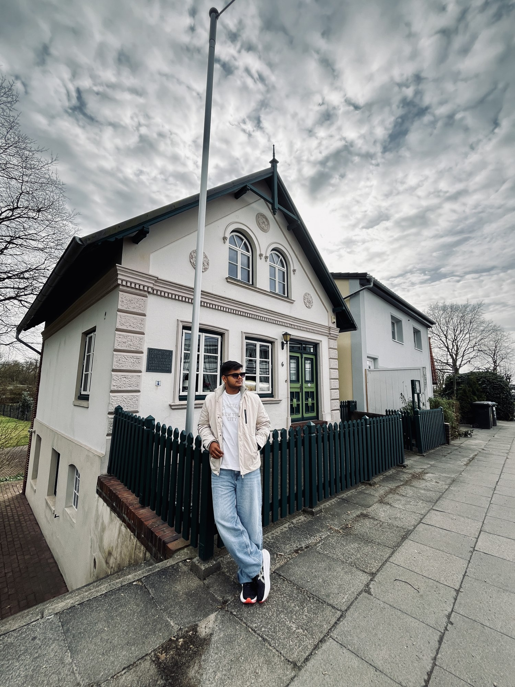
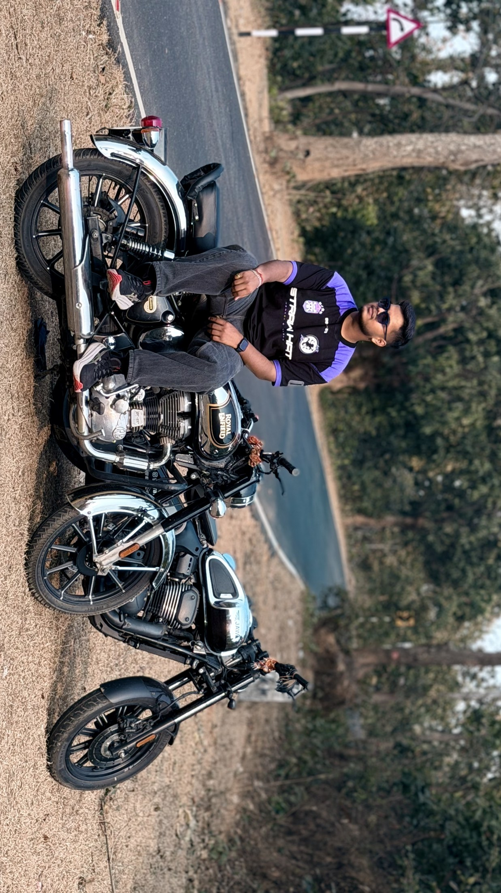

MAKE IT
FEEL RIGHT.
Structure, styling, and interaction. Bringing together HTML, CSS, JavaScript, and React to create interfaces that adapt to different screens.
HEY, I’M AMAN.
A developer’s mind.
An explorer’s heart.
A little more curious every day.
SECOND YEAR
BTECH / CS & AI
Student. Builder. Explorer.
A WORK IN PROGRESS ↗I’m a second-year Computer Science student with an AI specialisation — and a curiosity that doesn’t stop at the classroom door.
At Newton School of Technology, I’m building my foundation in computer science while exploring how useful digital experiences come together: the interface, the logic, and the data behind it.
Web development is where those pieces connect for me. I enjoy working across frontend and backend, turning an idea into something people can actually use.
Outside tech, I’m drawn to new places, camping, photography, and content creation. Different surroundings give me a different way to see things.
Select a technology to explore
where it fits in my toolkit.
Semantic HTML gives a page its meaning — from headings and navigation to forms and accessible content. It’s the foundation underneath the visual layer.
<main>
<h1>Hello, world. I’m Aman.</h1>
</main>Structure, styling, and interaction. Bringing together HTML, CSS, JavaScript, and React to create interfaces that adapt to different screens.
Working with Python, SQL, and PostgreSQL to explore application logic, queries, and the data that supports an experience.
Developing problem-solving skills through data structures and algorithms, alongside my academic specialisation in artificial intelligence.
A closer look at the digital space
you’re exploring right now.

CODE.
CREATE.
KEEP MOVING.
A personal portfolio that brings my technical interests and life beyond the keyboard into one place.
THE BEST PART?
I’M JUST
GETTING STARTED.
Some of my favourite moments
don’t come with a charging cable.

A little time outside. A different view.
Another story to bring back.
New streets, unfamiliar places, and the joy of seeing something for the first time.
↗A slower pace, an open sky, and a chance to step away from the everyday.
↗Looking for the details, the light, and the moments that deserve a second look.
↗Turning experiences and ideas into stories worth sharing.
↗Have an idea, a project, or a shared interest?
Find me on LinkedIn. Let’s start a conversation.